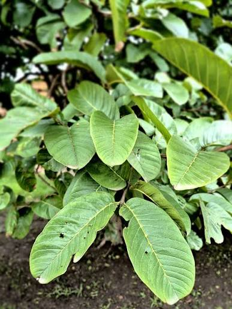

- Nome popular
- Goiabeira (folha de goiabeira)
- Nome científico
- Psidium guajava
- Uso tradicional
- Chá das folhas, usado popularmente para problemas intestinais, como diarreia.
- Cuidados
- Não substitui tratamento. Se a diarreia durar ou vier com febre, procure atendimento. Gestantes, crianças e idosos devem ter orientação profissional antes de usar.
- Onde fica
- No campus da faculdade. Local exato a informar.